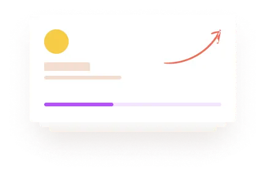

Контентнe зображення -растровe зображення (JPG/PNG -> WEBP)(фотографії)
(JPG/PNG -> WEBP)
Контентнe зображення -растровe зображення PNG - має альфа-канал (JPG/PNG -> WEBP)(фотографії)
(JPG/PNG -> WEBP)
WEBP-відобразиться в залежності від ширини єкрану
webp
PNG
WEBP
webp
Контентнe зображення -SVG-Векторна WEB-графіка- несуть інформаційний вміст-Іконки можуть інтегруватись як тегом IMG, SVG так і через CSS (background та інші)
Елементи дизайну - веркторні, або растрові зображення (можливо з прозорістю)
які є частиною дизайну сайту.
Можуть бути як векторні так і растрові
(SVG, JPG/PNG -> WEBP)
Елементи дизайну, частіше всього, інтегруються через CSS (background та інші)
Моя чернетка
Самий крутий варіант для оптимізації та найкращої якості (не працює в сафарі)---> img
srcset="img/image-jpg-2x.webp 2x, img/image-jpg-3x.webp 3x" src="img/image-jpg.webp" alt="Image"
Елемент дизайну PNG - Можуть бути як векторні, так і растрові.
1-й елемент-png---1х-7.94кб
Елемент дизайну WEBP (після конверкації png---1х-3.51кб)
Елемент дизайну WEBP (післ покращення якості в snapedit-100к-став jpeg)
Елемент дизайну WEBP (післ покращення якості в snapedit + прибрати фон вага-19.1кб-став png)
Елемент дизайну WEBP - Можуть бути як векторні, так і растрові.-webp (вага -мин-2.66Кб)
Елемент дизайну PNG - Можуть бути як векторні, так і растрові.-png розмір-3.98КБ
Елемент дизайну PNG - розмір-67.6КБ (цей малюнок підключається з розрахунку на різні розміри
екрану-приклад: source >media="(min-width: 768px)" srcset="img/png/png/block@2x.png")
Елемент дизайну WEBP - розмір-28.3 КБ (цей малюнок підключається з розрахунку на різні розміри
екрану-приклад:
source >media="(min-width: 768px)" srcset="img/png/png/block@2x.webp")

Елемент дизайну WEBP -відобразиться малюнок в залежності від ширини екрану.-підкючення по схемі:
source >media="(min-width: 768px)" srcset="img/png/png/block@2x.webp")